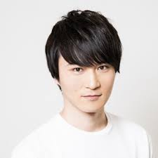

好きなYoutuberランキング
第1位
第2位
第3位

最後ランクインしたのは加藤純一という個人でやっているチャンネルで主にゲームの配信をしています。 ゲーム配信だけでなく雑談の動画などもあげておりそれなりに人気なのがすごいと思います。
35歳という歳に対して素でゲームを楽しんでやっているところに惹かれました。なんかのプロのゲーマーというわけではなく持ち前のトーク力などで人々を魅了しているところがすごいと思います。